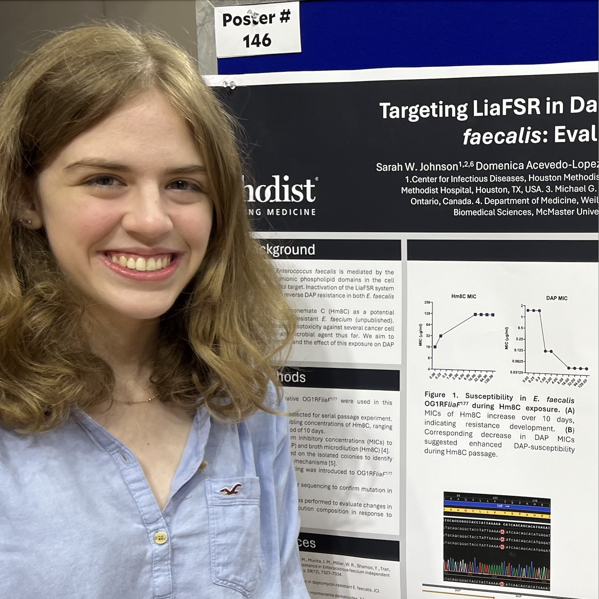
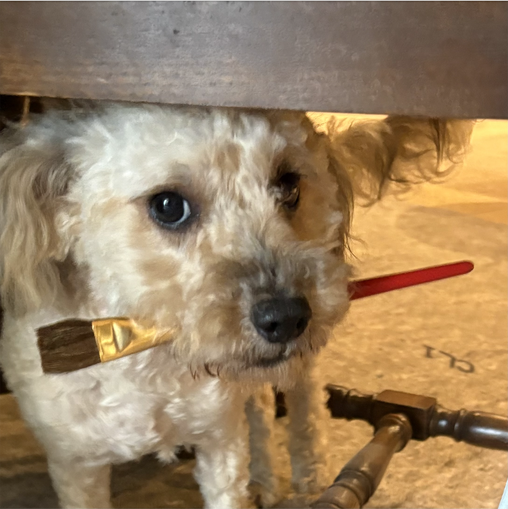

Hello! My name is Sarah Johnson, I'm a student at Rice University in Houston, TX, c/o 2026 working towards (and almost done with) a Bachelor's of Science in Cell Biology and Genetics.
I've always loved to draw and craft, and I've been passionate about science since I was very young. I'm a researcher first and foremost, with years of lab experience and a willingness to dive into just about any scientific literature that I need or want to.
It's rare to be able to combine two passions in the way that bio-art does for mine, but the art displayed here is exactly that.
To the right is my dog Twigs. She's a rescue, and the true artist of our pair.